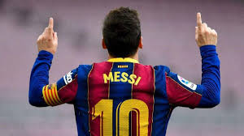

Lionel Messi
(Lionel Andrés Messi; Rosario, Santa Fe, 1987) Futbolista argentino. Poseedor de una habilidad técnica excepcional, una endiablada velocidad y una inventiva inagotable, desde que llegó de la mano de sus padres al F.C. Barcelona, con 13 años de edad, realizó una carrera vertiginosa por las diferentes categorías hasta el primer equipo, en el que debutó con apenas 16 años en un partido amistoso ante el Oporto. En 2004, con 17 años, Leo Messi jugó su primer encuentro oficial de la Liga española. Con 18 años le llegó su consagración internacional: formó parte de la selección argentina, campeona en el Mundial Juvenil Sub-20 de Holanda, disputado en 2005.
Sus primeros actos heroicos contra el Madrid
Si alguien aún precisara de una prueba definitiva de que Messi es un futbolista especial, ésta se produjo en el Clásico disputado a finales de la campaña 2006-07, mientras el Barça y Real Madrid batallaban por el título. El Madrid tomó ventaja en tres ocasiones en el Camp Nou; y Messi igualó las acciones en tres oportunidades, jugando con un Barça con 10 hombres en la cancha. El último gol, que completó su hat trick, el primero en un Clásico en 12 años, se produjo en el último minuto de un encuentro frenético.
